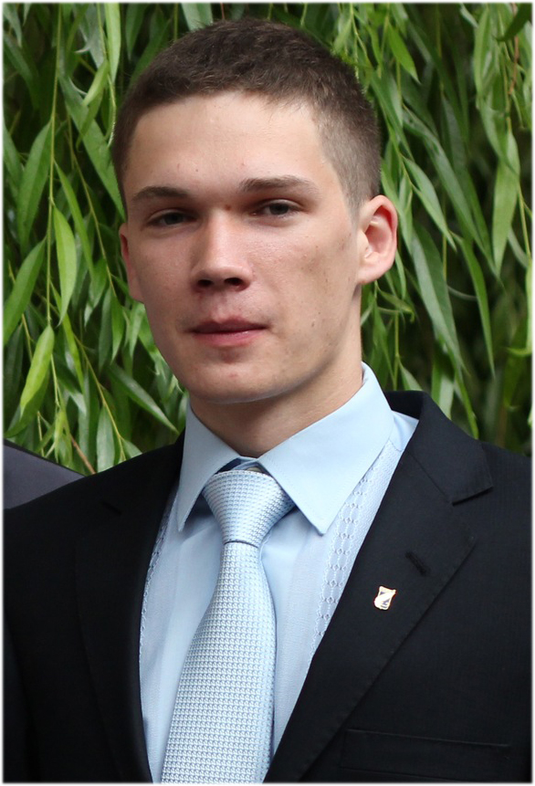
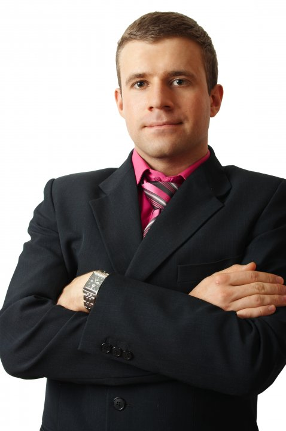

Date: Now 21, 2013
Есть ли жизнь после факультета?
Вопрос о том, как можно устроить свою жизнь после окончания факультета, всегда актуален для выпускника. Да и тот факт, что скоро будет уже последняя сессия, порождает в головах студентов пятого курса немало вопросов по поводу трудоустройства. Однако не стоит забывать, что мест, где Вы сможете реализовать себя, больше чем Вы думаете! Чтобы убедиться в этом, мы связались с выпускниками РФиКТ прошлых лет. Они поделились с нами не только информацией о местах своей работы, но и ответили на пару вопросов о минувшей факультетской жизни!
Алексей Корзун
Выпуск 2011 годы, кафедра кибернетики, специальность – радиофизика
- Что дал Вам университет и факультет в частности?
- Коммуникацию с людьми и создание своих проектов, в частности газеты “BUG”.
- Чем Вы сейчас занимаетесь?
- Сейчас Я строю свой бизнес.
- Что должен сделать каждый уважающий себя радиофизик за время обучения на факультете?
- Понять, для чего факультет ему был необходим, и как это можно использовать в реальном мире.
- Какой из преподавателей факультета внес наибольший вклад в Ваше развитие?
- Поляков А.В. за то, что поддерживал с газетой.
- Есть ли у Вас второе высшее образование, и стоит ли его получать?
- Нет, не стоит. У нас в культуре существует миф по поводу того, что чем больше образований, тем лучше. По большей части люди идут на второе высшее только для того, чтобы была корочка. Многие даже не могут ответить, для чего оно им. Знания, которые Я приобрел на финансах (второе высшее), мне, к сожалению, не помогло в бизнесе. Если у вас цель - заработок денег, то вы должны заниматься тем, как зарабатывать деньги, а не учить очередную математику. К сожалению, преподаватели не все богатые люди.
- Ваше пожелание студентам нашего факультета?
- Поставьте перед собой конкретную, измеримую цель, которую хотите достигнуть и распишите план. А дальше вопрос дела!
Наталья Махоркина
Выпуск 2011 года, кафедра интеллектуальных систем, специальность – радиофизика.
- Что дал Вам университет и факультет в частности? - Образование! Уверенность в себе, возможность воплощения идей в реальность, много друзей и впечатлений! - Чем Вы сейчас занимаетесь? - Я работаю в сфере информационных технологий SAP консультантом, поэтому можно сказать по специальности! - Что должен сделать каждый уважающий себя радиофизик за время обучения на факультете? - Сдать Воротницкого и Шишкину с первого раза! Посетить все мероприятия факультета, посвященные дню радиофизика. - Какой из преподавателей факультета внес наибольший вклад в Ваше развитие? - Не могу выделить одного преподавателя! Безусловно, Садов В.С. и Тихоненко С.Г. в научной и профессиональной сфере. И отдельное спасибо Янукович Т.П. и Полякову А.В.! - Есть ли у Вас второе высшее образование, и стоит ли его получать? - Нет, я не вижу в этом особого смысла для себя, но если человек хочет переквалифицироваться для того, чтобы работать не в технической сфере, то второе высшее образование, безусловно, стоит получить. Дополнительное образование лишним не бывает. - Ваше пожелание студентам нашего факультета? - Незабываемых 5 лет на факультете! Воплощайте свои идеи в реальность и не бойтесь рисковать. Университетские годы самые яркие и незабываемые, так что наслаждайтесь!
Виталий усов
Выпуск 2011 года, кафедра радиофизики и цифровых медиа-технологий, специальность – радиофизика.
- Что дал Вам университет и факультет в частности? - Когда я пришел на факультет, Я был немного разочарован. Я с первых дней ожидал какого-то action’а, новых предметов, чего-то интересного, а в реальности получил еще один год лицея. Но чем дальше в лес, тем больше преподавалось более узких дисциплин. Факультет мне дал базовые знания обо всем. И ничего конкретного о чем-то конкретном. РФ учит думать, имея на руках все необходимое. Много дало общежитие, особенно студсовет. - Чем Вы сейчас занимаетесь? - Занимаюсь Я сейчас программированием. Если точнее, то под iOS устройства. И Я считаю, что работаю по специальности. - Что должен сделать каждый уважающий себя радиофизик за время обучения на факультете? - Попробовать себя везде. Пробежать честно ориентирование, получить пересдачу, погулять в Роще, поучаствовать в капустнике, оторваться на «Сфере» и, конечно же, получить диплом! Преподаватели еще говорили, что на-стоящий радиофизик должен помнить систему уравнений Максвелла, но Я считал: «важнее не помнить, а уметь разбираться»! - Какой из преподавателей факультета внес наибольший вклад в Ваше развитие? - Я не хотел заниматься программированием до конца 2-го курса, а когда пришел на 1-ю кафедру, чтобы посмотреть что там и как там – передумал. Игорь Эдуардович Хейдоров приехал на кафедру только ради 3 человек, которые его пришли послушать. Потратил он 2 часа времени и реально повлиял на мой выбор. Он показал, что программирование - это только инструмент, главное - идея и ее реализация. И это звучало правдоподобно из уст человека, который основал «программерскую» контору... - Есть ли у Вас второе высшее образование, и стоит ли его получать? - Не-а, не слышал. Я не против него, но все что хотелось, Я получил в университете, остальное можно выучить самому. Да и понятие нескольких высших для меня еще не показатель чего-либо. Единственное что сейчас хотел изменить - пошел бы учиться в аспирантуру. Просто так, ради интереса, да и право подписывать письма как Dr. Vitali Usau, привлекает. - Ваше пожелание студентам нашего факультета? - Пожелал бы ребятам получать удовольствие от студенчества, определиться, чего от жизни хотят ближе к 5-му курсу и не забывать отрываться, тусоваться. После такого не будет, вернее, будет, но все по-другому!

Дмитрий Новик
Выпуск 2011 года, кафедра интеллектуальных систем, специальность – радиофизика.

- Что дал Вам университет и факультет в частности? - Факультет мне дал в первую очередь 5 незабываемых лет, четыре из которых Я прожил в общежитии в Роще, хороших друзей и подруг. И конечно же, образование. - Чем Вы сейчас занимаетесь? - На данный момент Я работаю в Минском филиале российской компании Competentum. Компания работает на международном рынке электронного образования. Начинал как разработчик контента, а сейчас работаю менеджером проекта. - Что должен сделать каждый уважающий себя радиофизик за время обучения на факультете? - Все, кто хочет называть себя радиофизиками, должны, как мне кажется, пожить в Роще (ну или хотя бы в общежитии в Роще). Пройти такие суровые испытания как В.И.Воротницкий и Шишкина Т.В. И хорошенько повеселиться на Сфере! - Какой из преподавателей факультета внес наибольший вклад в Ваше развитие? - Все вносили понемногу. Еще с ранних курсов очень хорошо мне запомнилась Серикова Н.В - побольше бы таких преподавателей. Еще хотел бы отметить моего бессменного курсового и дипломного руководителя - Шестакова К.М. Я очень ему благодарен. - Есть ли у Вас второе высшее образование, и стоит ли его получать? - Второго высшего нет, пока не вижу в этом необходимости. - Ваше пожелание студентам нашего факультета? - Студентам нашего факультета хочу пожелать здоровья в первую очередь. За время учебы обязательно найти занятие, которое будет по душе и которым с радостью смо-жете заниматься после университета. И не забывать свою Alma Mater.
Дмитрий Шумак
Выпуск 2011 года, кафедра квантовой радиофизики и оптоэлектроники, специальность – радиофизика.
- Что дал Вам университет и факультет в частности? - Университет дал мне РАФ, а уже он, в свою очередь, дал мне хороший потенциал на будущее, приятные знакомства, отличных друзей и, конечно же, познакомил с Рощей! - Чем Вы сейчас занимаетесь? - Работаю в одной частной компании, занимаюсь сборкой и наладкой спектрального оборудования. Можно сказать, я один из тех, кто пошел работать по специальности. - Что должен сделать каждый уважающий себя радиофизик за время обучения на факультете? - Каждый уважающий себя радиофизик должен получить диплом : ) - Какой из преподавателей факультета внес наибольший вклад в Ваше развитие? - Я бы в первую очередь выделил Гилевского Станислава Викентьевича! Это преподаватель, который научил верить в статистику и применять её на практике. А это впоследствии оказалось полезным. Ещё я бы отметил Кольчевского Николая Николаевича и Фираго Владимира Александровича – то, о чем они рассказывали на своих занятиях, не раз пришлось применять и в обычной жизни. - Есть ли у Вас второе высшее образование, и стоит ли его получать? - Второго высшего не имею. Думаю, что получить его - дело полезное, но для себя я решил, что и одного вполне достаточно. - Ваше пожелание студентам нашего факультета? - Не лениться и не бояться экспериментировать в жизни! Ну и проучиться на факультете так, чтобы потом было, что вспомнить после его окончания.
Сергей Якушевич
Выпуск 2008 года, кафедра информатики, специальность – радиофизика.

- Что дал Вам университет и факультет в частности? - Развил глобальное мышление. Университет, факультет – сложно сказать конкретно, что они мне дали :) - Чем Вы сейчас занимаетесь? - Работаю, но не по специальности – инженером-программистом. И я рад своей работе. - Что должен сделать каждый уважающий себя радиофизик за время обучения на факультете? - Конечно же, пробежать кросс у Жукова Виктора Викторовича, сдать экзамен Юрию Иосифовичу Воротницкому и на экзамене по матану решить дополнительную задачу! - Какой из преподавателей факультета внес наибольший вклад в Ваше развитие? - Сложно сказать. Определенный вклад внесли все, но наибольшее влияние оказали, наверное, Бахтин Виктор Иванович, Гилевский Станислав Викентьевич, Садов Василий Сергеевич, Воротницкий Юрий Иосифович и Мулярчик Степан Григорьевич. - Есть ли у Вас второе высшее образование, и стоит ли его получать? - Нет, зачем? Я считаю, что получать второе образование ради корки - не самая лучшая идея. Лучше своими силами заниматься тем, что вам нравится, это даст больший результат. К сожалению, в нашей стране или у тебя свой бизнес, или ты программист, архитектор, врач. Остальное, думаю, оплачивается не очень достойно. - Ваше пожелание студентам нашего факультета? - Студентам хочу пожелать побыстрее выбрать то, что Вам нравится, и прокачиваться в данном направлении. Нравится наука - значит, занимайтесь наукой. Для этого у нас есть огромные возможности, нужно только желание. Не хочется учиться – пробуйте работать, может, здесь всё будет куда оптимистичнее!
Кирилл Раковчук
Выпуск 2012 года, кафедра интеллектуальных систем, специальность – компьютерная безопасность
- Что дал Вам университет и факультет в частности? - Для меня это странный вопрос. Каждый получил ровно столько, сколько хотел. Кто-то параллельно читал книжки и пробовал всё на практике, думая, как это применить в жизни, другие же наоборот, ставили себе цель «лишь бы сдать». Но я никогда не понимал тех людей, которые всё время учились, забывая про настоящую студенческую жизнь - с общагой, отдыхом в Роще, всякими «Голыми милями» и дискотеками в клубе «Сфера». Здесь я научился формировать своё мнение, аргументированно отстаивать свою позицию, крутиться, расставлять приоритеты, принимать решения и нести за них ответственность, уважать окружающих и их право на иную точку зрения, а самое главное — быть коммуникабельным. По-моему, это немало! Профессора учили мудрости в отношении к жизни, прививали нам стандарты человечности, культуры в самом широком понимании этого слова. - Чем Вы сейчас занимаетесь? - Чтобы найти что-то хорошее и стоящее, всегда приходилось учиться дополнительно, читать какие-то книги в том или ином направлении. В настоящее время работаю программистом в международной компании - форекс-брокере, предоставляющей доступ к интернет-трейдингу на валютном и прочих рынках, позволяя торговать валютными парами, активами, фьючерсами, контрактами на разницу цен и сырьем. Это непросто. Но кто говорил, что будет легко? - Что должен сделать каждый уважающий себя радиофизик за время обучения на факультете? - Хмм... Думаю, он должен обязательно замутить с девчонкой гуманитарного факультета и не разочароваться после этого в девушках. Шучу. На самом деле, не могу сказать что-то конкретное. Каждый сам должен сделать свой выбор. - Какой из преподавателей факультета внес наибольший вклад в Ваше развитие? - Мулярчик Степан Григорьевич, Садов Василий Сергеевич, Воротницкий Юрий Иосифович... Все эти имена не пустой звук. Это люди, которые на своём примере показывают, как должен быть воспитан настоящий парень, какие brain-возможности у него должны быть. Не могу не вспомнить таких людей, как Янукович Татьяну Петровну и Полякова Александра Владимировича. Но самое большое влияние на меня в свое время оказал Котов Дмитрий Сергеевич, с которым у меня сложилась крепкая дружба. Ещё сам когда-то наполовину студент, он дал мне то, что я ещё не понимал тогда - чего я хочу в жизни. - Есть ли у Вас второе высшее образование, и стоит ли его получать? - Нет, второго высшего образования у меня нет. Да и за-чем, если работаешь по специальности? Получение очередной корочки? Не знаю. По-моему, это сейчас не модно, да и просто не нужно. - Ваше пожелание студентам нашего факультета? - Хочу пожелать всем студентам, чтобы у каждого была своя мечта, была цель. Живите мечтой и работайте ради своей цели. В противном случае, вы будете работать на того, у кого эта цель есть. Читайте книги, занимайтесь спортом. Не останавливайтесь на достигнутом. Интересуйтесь политикой. И никогда, запомните, никогда не бойтесь выражать свою точку зрения, какой бы безумной она ни была. Жизнь слишком коротка, чтобы тратить её на комплексы и скромность. Любите.Подводя итоги, скажу вам: годы учебы в БГУ были для меня мастер-классом жизни. И я горжусь тем, что закончил именно этот университет. Именно этот факультет! Вы должны это знать. Спасибо.
Подведем итог всему, что было сказано нашими выпускниками: берите от университета как можно больше. Время летит быстро и постоянно приносит с собой что-то новое. Не сидите на месте, развивайтесь и определяйтесь с тем, куда двигаться по жизни. Заводите новые и поддерживайте старые знакомства, ведь, возможно, с этими людьми вы будете идти через всю жизнь. Настраивайтесь только на успех и добивайтесь всего!